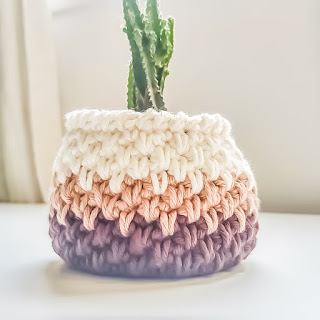
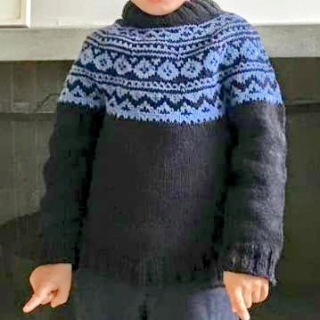
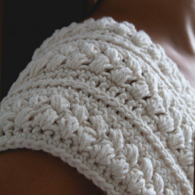

Era ano de 2012, estava começando a esfriar e eu resolvi brincar de fazer tricô, de novo, já que todo inverno eu brincava, mas nunca finalizava nada. Mas dessa vez foi diferente, de repente, percebi que o tricô virou uma paixão, se transformou em algo que queria fazer para sempre. Eu sabia o básico do básico, o que era ponto meia e ponto tricô e ainda me confundia na nomenclatura. Comecei então a pesquisar na internet tudo sobre tricô, e com isso fui descobrindo novas técnicas, novos pontos, e fui cada vez me apaixonando mais pelo ofício. Aprendi também o crochê.
Criei, então, a damanu para mostrar meu trabalho. Minhas peças são feitas à mão, uma a uma, de forma exclusiva.
Aos pouquinhos vou tecendo os fios e as cores, criando peças e sendo feliz!
Algumas fotos


